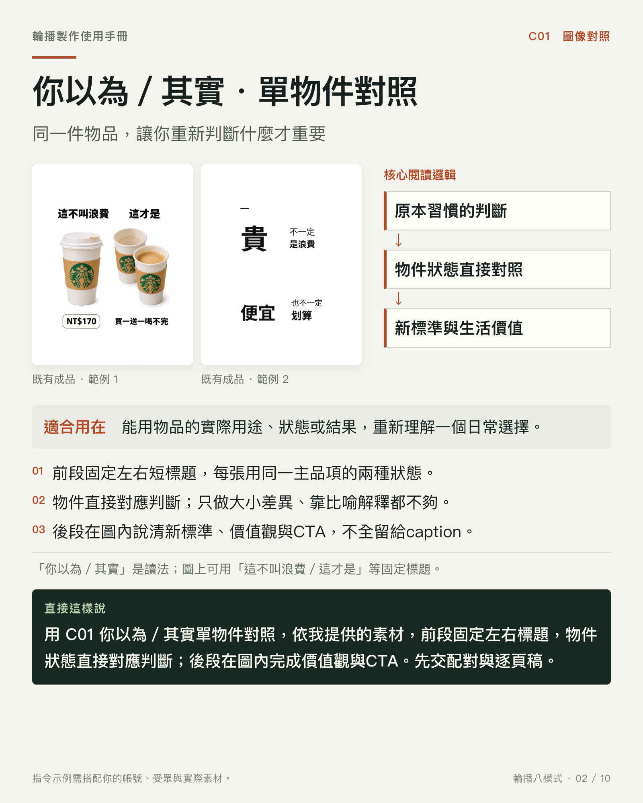
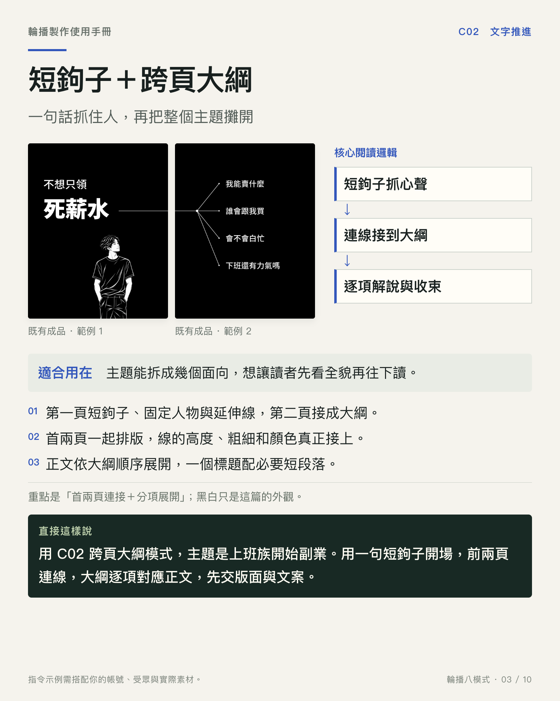
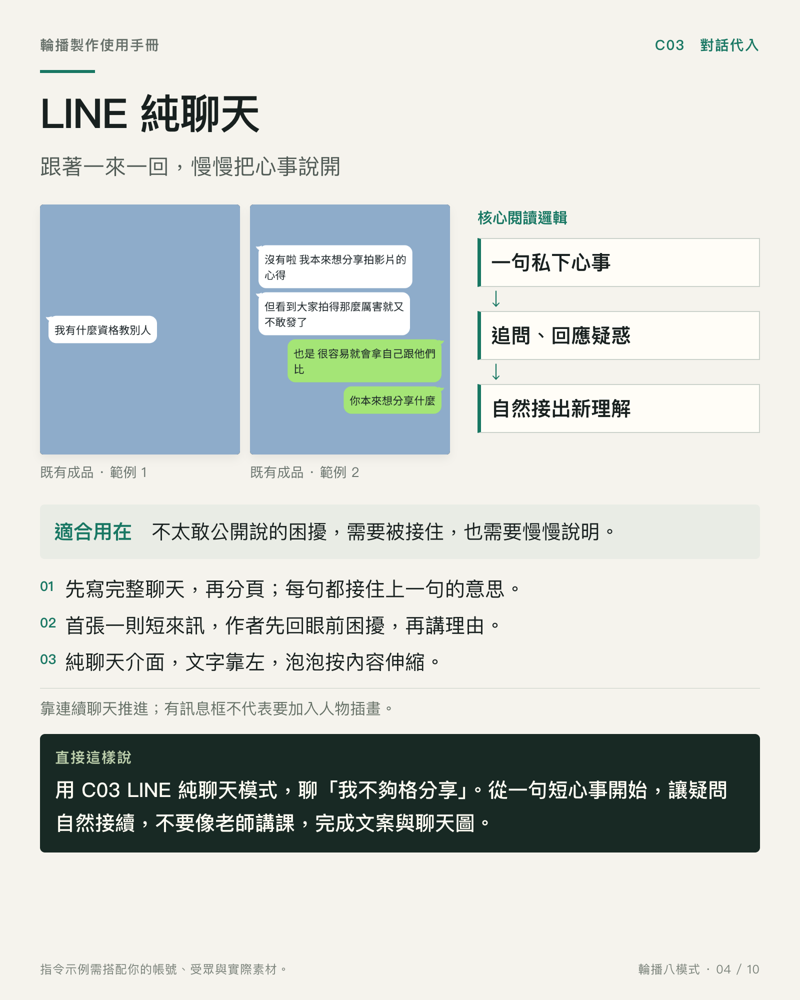
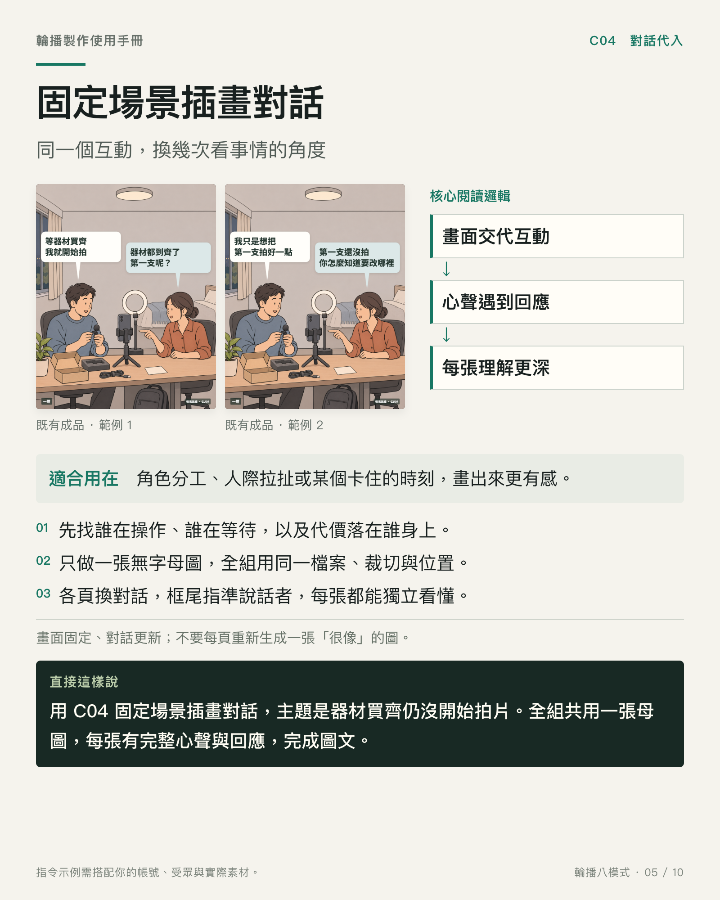
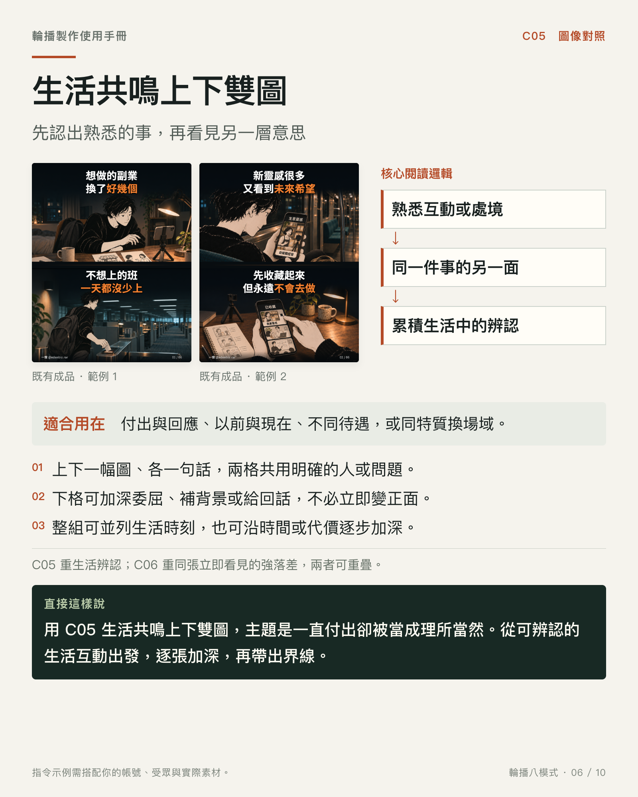
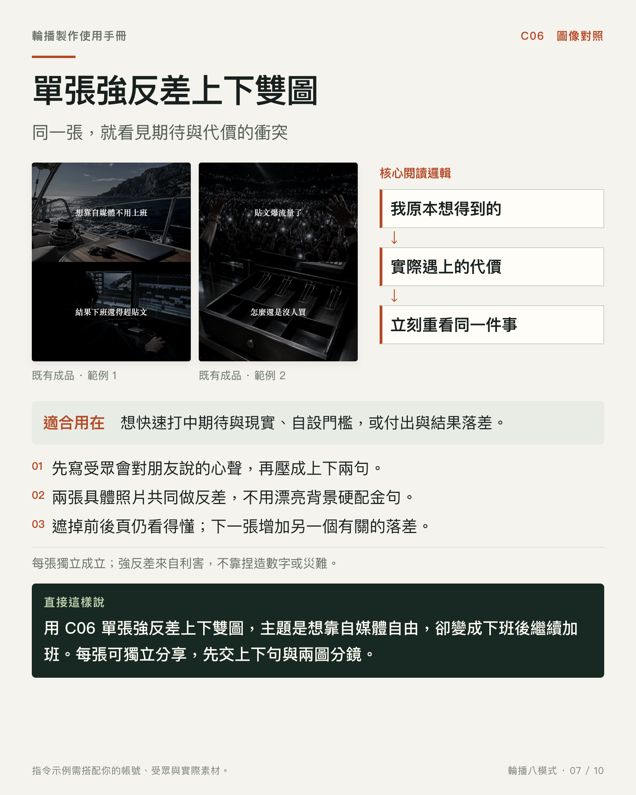
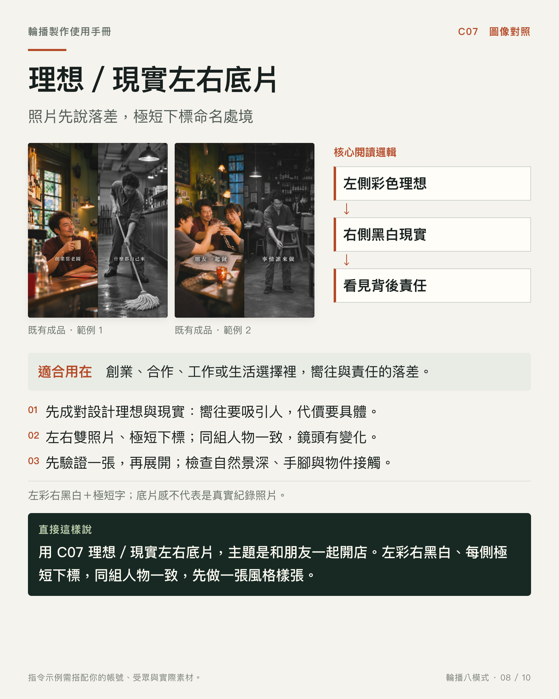
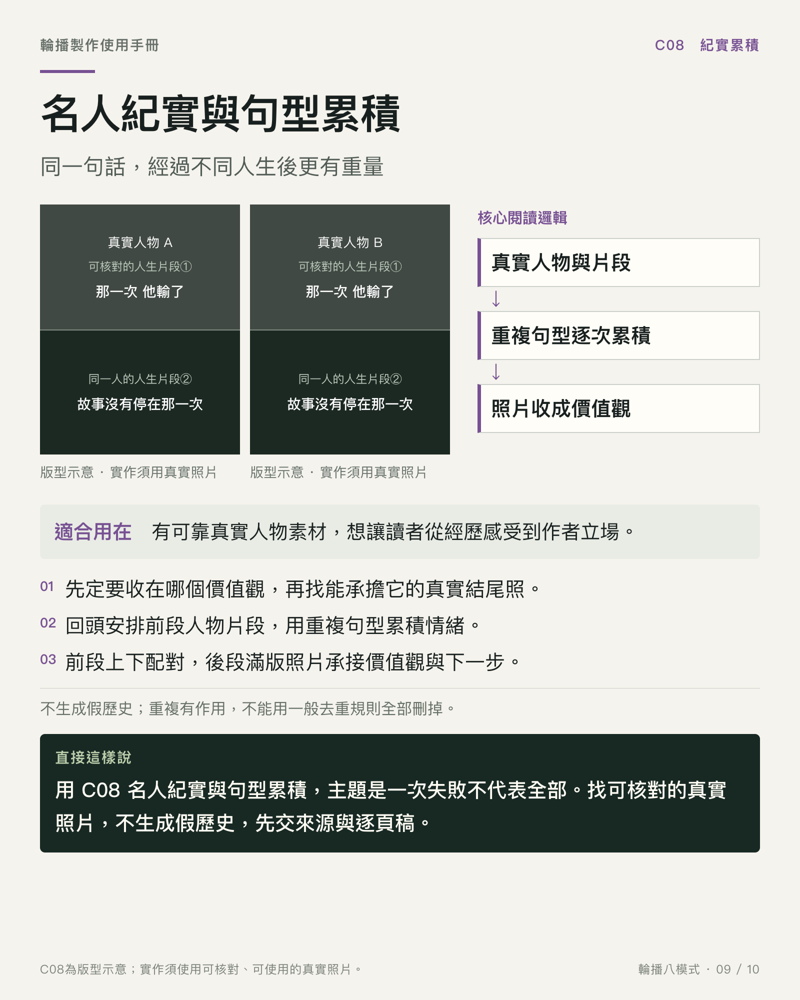

下載或交給AI讀
能安裝skill的環境，把兩個技能資料夾放在宿主的技能根目錄。只有對話或知識庫功能的AI，使用完整Markdown。
先選讀者怎麼理解，再決定文字和畫面。從「你以為／其實」的物件對照，到聊天、雙圖和紀實累積，一份指南接起八種製作方式。
還沒想好形式？
把帳號、受眾與素材交給AI，先推薦兩三種，選定再製作。也可以請AI說明理由後直接決定。
已經有喜歡的形式？
直接說「用 C01」或完整模式名稱，再說要文案、分鏡或完整圖片。延續舊稿就沿用，不重問選型。
這些是八種製作方式，並非八個AI模型。同一個帳號可以按題目與受眾換模式。
C01 與 C07：固定短標題＋孤立物件重看判斷，選C01；人物與環境演出理想現實、左彩右黑白，選C07。
C05 與 C06：C05著重生活辨認、關係或時間變化；C06著重同張立即成立的強落差。兩者可能重疊，按閱讀重心選。
C03 與 C04：完整聊天來回選C03；同一場景插畫、框尾指向角色、每張獨立對話選C04。

點圖片看原尺寸完整圖解同一件物品，讓你重新判斷什麼才重要
適合：能用物品的實際用途、狀態或結果，重新理解一個日常選擇。
「你以為／其實」是讀法；圖上可用「這不叫浪費／這才是」等固定標題。
用 C01 你以為／其實單物件對照，依我提供的素材，前段固定左右標題，物件狀態直接對應判斷；後段在圖內完成價值觀與CTA。先交配對與逐頁稿。

點圖片看原尺寸完整圖解一句話抓住人，再把整個主題攤開
適合：主題能拆成幾個面向，想讓讀者先看全貌再往下讀。
重點是「首兩頁連接＋分項展開」；黑白只是這篇的外觀。
用 C02 跨頁大綱模式，主題是上班族開始副業。用一句短鉤子開場，前兩頁連線，大綱逐項對應正文，先交版面與文案。

點圖片看原尺寸完整圖解跟著一來一回，慢慢把心事說開
適合：不太敢公開說的困擾，需要被接住，也需要慢慢說明。
靠連續聊天推進；有訊息框不代表要加入人物插畫。
用 C03 LINE 純聊天模式，聊「我不夠格分享」。從一句短心事開始，讓疑問自然接續，不要像老師講課，完成文案與聊天圖。

點圖片看原尺寸完整圖解同一個互動，換幾次看事情的角度
適合：角色分工、人際拉扯或某個卡住的時刻，畫出來更有感。
畫面固定、對話更新；不要每頁重新生成一張「很像」的圖。
用 C04 固定場景插畫對話，主題是器材買齊仍沒開始拍片。全組共用一張母圖，每張有完整心聲與回應，完成圖文。

點圖片看原尺寸完整圖解先認出熟悉的事，再看見另一層意思
適合：付出與回應、以前與現在、不同待遇，或同特質換場域。
C05 重生活辨認；C06 重同張立即看見的強落差，兩者可重疊。
用 C05 生活共鳴上下雙圖，主題是一直付出卻被當成理所當然。從可辨認的生活互動出發，逐張加深，再帶出界線。

點圖片看原尺寸完整圖解同一張，就看見期待與代價的衝突
適合：想快速打中期待與現實、自設門檻，或付出與結果落差。
每張獨立成立；強反差來自利害，不靠捏造數字或災難。
用 C06 單張強反差上下雙圖，主題是想靠自媒體自由，卻變成下班後繼續加班。每張可獨立分享，先交上下句與兩圖分鏡。

點圖片看原尺寸完整圖解照片先說落差，極短下標命名處境
適合：創業、合作、工作或生活選擇裡，嚮往與責任的落差。
左彩右黑白＋極短字；底片感不代表是真實紀錄照片。
用 C07 理想／現實左右底片，主題是和朋友一起開店。左彩右黑白、每側極短下標，同組人物一致，先做一張風格樣張。

點圖片看原尺寸完整圖解同一句話，經過不同人生後更有重量
適合：有可靠真實人物素材，想讓讀者從經歷感受到作者立場。
不生成假歷史；重複有作用，不能用一般去重規則全部刪掉。
用 C08 名人紀實與句型累積，主題是一次失敗不代表全部。找可核對的真實照片，不生成假歷史，先交來源與逐頁稿。
能安裝skill的環境，把兩個技能資料夾放在宿主的技能根目錄。只有對話或知識庫功能的AI，使用完整Markdown。
還沒選就先比較兩三種；已指定或延續成品就直接採用。只要文案也能選任一模式。
文案、文案＋分鏡，或完整PNG。完整圖片需生圖／排版工具；製作不會自動發布或發私訊。
$carousel-mode-guide$misconception-object-carousel不同AI的保存與自動發現方式不同；不支援持久保存時，規則只在當次對話生效。這份安裝包不附登入、API key、生圖引擎或品牌資料。
表單只在你的瀏覽器組合文字，內容不會送出或上傳。
先填題目、受眾與素材，再按「產生我的製作指令」。
完整包包含選型入口、八種指南及C01獨立skill。C02–C08編號維持不變。
兩個skill資料夾、八種模式、安裝說明及Python安裝器。已裝1.0.0請先備份移開舊資料夾，再安裝新版。
下載 v1.1.0 ZIP把整份文件交給AI，或存入專案知識庫。內容完整自含，不需原私人工作區。
下載完整規則C01獨立skill，適合已經有其他製作流程，只想加上固定標題、物件對照與圖內收束。
下載 C01 Skill一張總覽、八張模式介紹及一張呼叫教學。含可複製指令文字，適合放大閱讀或轉傳。
下載圖解 ZIP圖解配色與案例用來說明模式，換帳號時仍需重新設定聲音、人物、素材與CTA。C08公開圖解使用版型示意；實作時應選可核對、可使用的真實照片。